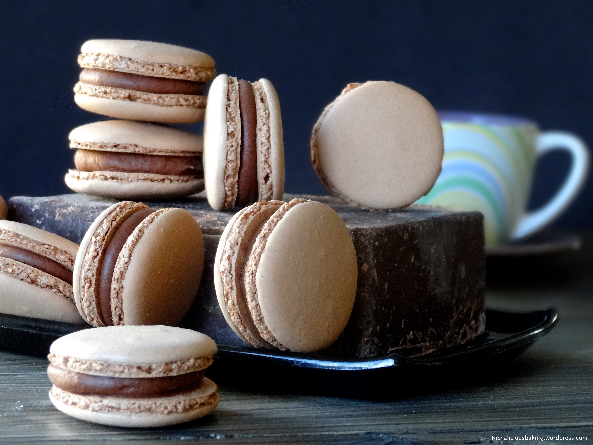

BakeHub
Danielle's Favorite Baking Recipes
Dark Chocolate Macaron Filling

This is the easiest part about making macarons!
Difficulty: Easy
Ingredients:
- 0.5 cup of heavy cream
- 4 ounces of finely chopped, bittersweet chocolate
- 1 tablespoon of butter
- 1.5 teaspoons of instant coffee
- Put the chopped chocolate in a heatproof bowl.
- Heat the cream and instant coffee in a small saucepan until the edge of the cream just starts to boil.
- Pour the hot cream into the bowl with chocolate. Let the bowl sit for a minute. Add in the butter. Stir with a spatula until smooth.
- The chocolate filling should be quite runny. Pour it into a piping bag and let the filling completely cool and slightly harden in the refrigerator.
- Once the filling is of piping consistency, pipe about a teaspoon of filling onto a macaron cookie. Then, sandwich another macaron cookie on top.
- After all your hard work it may be hard to resist, but let the completed macarons to stand for a day. This allows for the flavor of the filling to meld with the macaron cookies.
Recipe adapted from HomeCookingAdventure